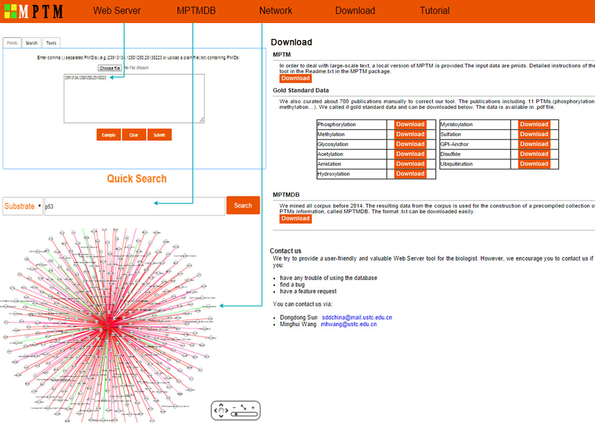

MPTM is a web-based text mining tool that extracts and incorporates comprehensive knowledge about post-translational modification with their underlying substrate,enzyme,site,disease,and etc. This tool integrates available data not only from the published literature but also from the biological databases. Currently, users can browse the web server MPTM and see the results by entering the name of protein or other terms. Moreover, users can download data in the MPTMDB. In addition, using the "Interaction Search" to find potential substrate-enzyme associations.(See examples of server's output)
(1) Users can select "Pmids" tab: Enter comma (,) separated PMID(s).(e.g.)23913134,12501250,25135223 or upload a plain file(.txt) containing PMIDs, or click "Example" button to get an instance.
(2) Users can select "Search" tab: enter substrate protein name(e.g.p53) and other terms are optional, or click "Example" button to get an instance.
(3) Users can select "Texts" tab: Enter some texts in the inputbox, or click "Example" button to get an instance.
(4)This is a 'quick view' list including high level results. It contains PMIDs, titles, substrates, modified sites, post-translational modification (PTM) types and so on. The corresponding results will be shown on the panel like the following figure. It contains PTM types,substrates,enzymes,sites,diseases,GO-Terms,organisms and crosstalk between PTMs.
(5) To search data in MPTMDB, turn to the menu "MPTMDB". MPTMDB provides function of "Qucik search" by composing name of protein or enzyme. Click the "Search" button to search from MPTMDB.
(6) To browse the interaction network and distribution, turn to the menu "Netwok" and input the protein name you want to browse. Users can also input multiple protein names by entering comma(,).
(7) To download data in the MPTM, select the menu "Download". MPTM provides two formats of downloadable file in .txt and .pdf formats, The users can download all data in MPTM, including Gold standard data,MPTMDB. We also provide a MPTM package.
We try to provide a user-friendly and valuable Web Server tool for biologists. However, we encourage you to contact us if you:
You can contact us via: